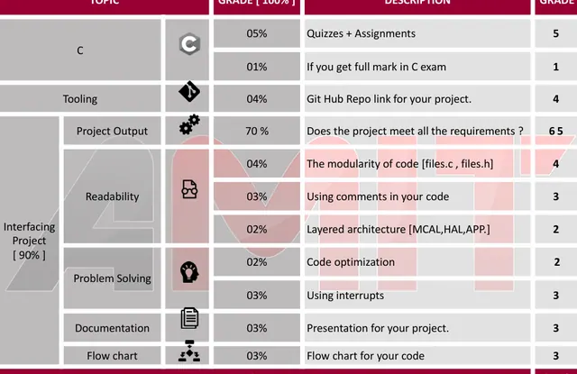

Skip to content
GR
George Read
Bio
Research
Projects
Experience
Skills
Community
Presentations
Courses
Certificates
George Read
Courses
Courses inside class and extra courses outside class.
Courses inside class
PDF
unofficial transcript - George Read.pdf
Extra courses outside class

Embedded systems course: project grading criteria
AMIT Embedded Systems Diploma